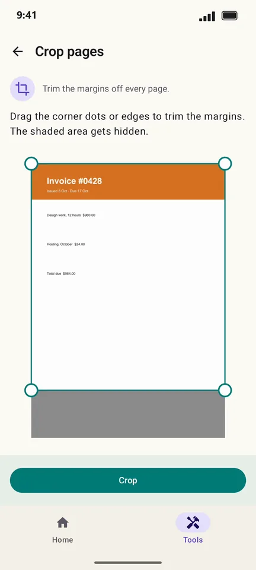
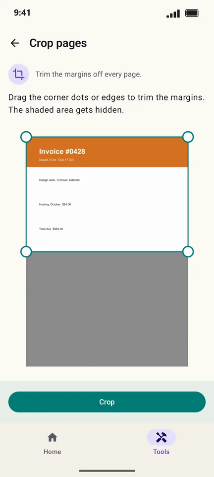
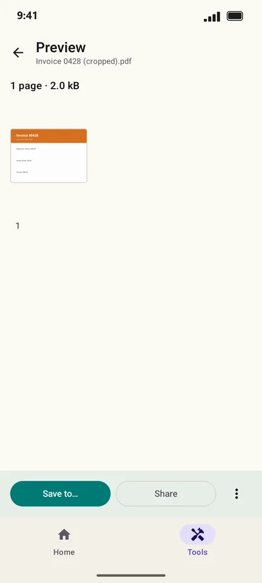

How to crop the margins of a PDF on Android
Wide white margins make a PDF tiny on a phone screen. PageCat trims the margins off every page at once, so the content fills the screen when you read it.
Steps
Open the Tools tab, tap Crop pages and pick the PDF.

Drag the corner dots or edges. The shaded area is what gets hidden.

Tap Crop, then save or share the cropped copy.

Good to know
- Cropping hides the outer margins. Nothing is deleted from the file, so you can undo it later in another app.
- Select only some pages to crop just those.
Questions
Does cropping reduce the file size?
No. The hidden area is still in the file. Use Compress to make the PDF smaller.